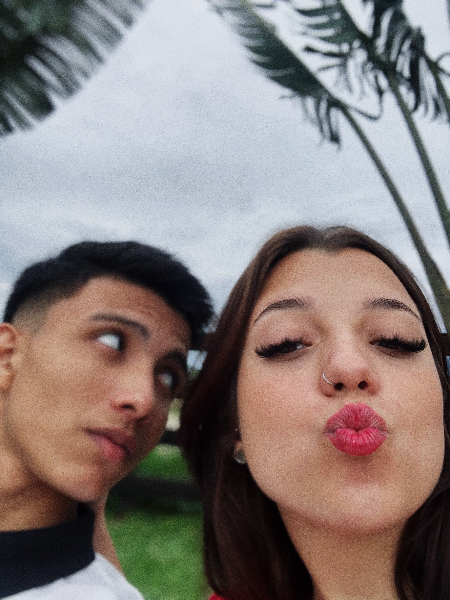
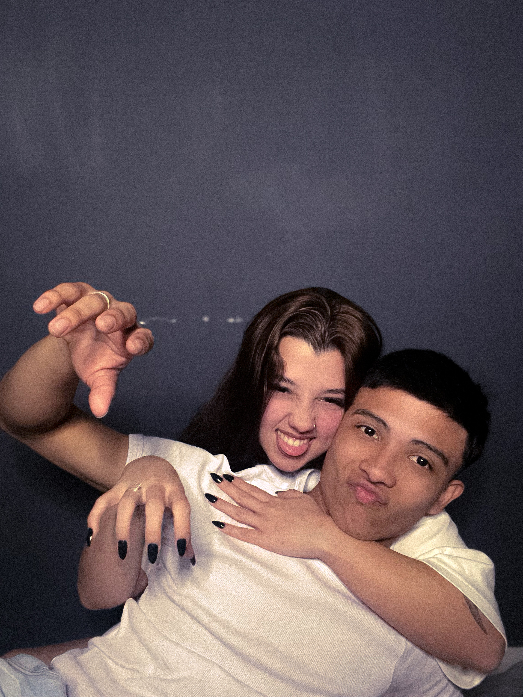

PARA MINHA PRINCESINHA
VOCÊ É O AMOR DA MINHA VIDA!
Já que não posso te entregar cartas físicas, então vai uma virtual...
Minha princesinha, fiz essa página com dois intuitos! O primeiro logicamente pelo nosso aniversário <3, e o segundo pra te pedir perdão profundamente por minhas atitudes, que eu sei, só chateiam e estressam mais vc. Por meio disso te peço perdão profundamente! e reafirmo que seu companheiro vai sempre te dá a mão e o apoio em qualquer situação. E hoje é o dia que começamos de fato nossa história, há mais de 2 anos atrás. E dentre todos os dias 19 que vivenciamos, foram muitos e muitos momentos diferentes. E hoje eu tenho que dizer que é assim também. Mas o que nunca mudou desde quando te conheci, foi o sentimento que tenho por vc. Eu não faria NADA diferente de todas as vezes que me declarei à vc. Me ajoelharia quantas vezes fosse preciso, escreveria cartas infinitas, porque meu coração é seu.
Não tenha incerteza do nosso amor. Sonho em está te esperando no altar, e ver vc de branco, com uma paisagem tão linda quanto vc, em Santorini. Não tenho dúvidas disso, porque é o "trabalho" e DEUS que pode engrandecer o ser humano pra ele ser o que ele quer se tornar. Díficil nós sabemos que é demais, e às vezes até triste, mas eu tenho me esforçado mais do que nunca, e principalmente pedido à Deus força e sabedoria pra lutar todos os dias. Nada nessa vida é fácil, nada é de graça, mas eu tenho tanta fé, amor. Se vc soubesse o quanto eu clamo a Deus pela sua vida e pelo nosso relacionamento. Eu farei de tudo, assim como te prometi, pra te buscar, e pra termos a vida na nossa casinha, com os pets, eu JURO, eu JURO, meu amor.
EU TE AMO INFINITAMENTE ♾️
"Mil milhões ainda é limitado, por isso te amo INFINITAMENTE 🌷"
...E por vc eu beberia o mar de canudinho 🌊
"I'd wanna be next you...❤️"
🥳🥳 Feliz nosso dia, minha princesinha!!! 🥳🥳
Que Deus nos ilumine e proteja de todo mal. Nos dê muito discernimento para seguir em nossas lutas diárias. Sei que são muitas, mas tbm tenho certeza que ele há de nos recompensar! Eu te amooooo muitãããããããããoooooozãããooo ❤️❤️❤️❤️❤️